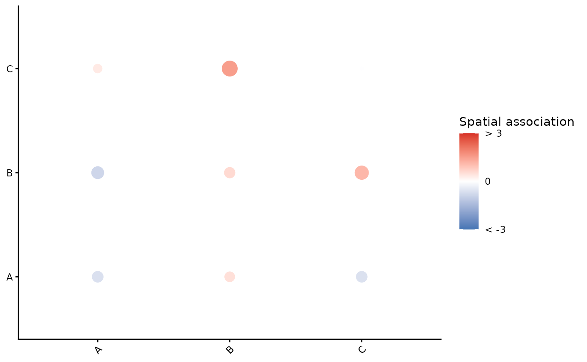

Builds a pairwise scatterplot of marker-marker associations for a single image
using the output of getPairwise().
Usage
imageCrossPlot(
result,
image = NULL,
colourGradient = c("#4575B4", "white", "#D73027"),
marksToPlot = NULL,
limits = NULL
)Arguments
- result
A matrix or data frame produced by
getPairwise()where rownames are image IDs and colnames are concatenated marker pairs in the form"from__to". Must contain at least one row with name matchingimage.- image
Character scalar. Which image (row in
result) to plot. IfNULL, defaults to the first rowname ofresult.- colourGradient
Character vector of length 3 giving the low, mid, and high colours for a diverging palette used by
scale_colour_gradient2(). Default isc("#4575B4", "white", "#D73027").- marksToPlot
Optional character vector of marker names. If supplied, the plot is restricted to rows and columns where both
fromandtoare in this set.- limits
Numeric length-2 vector giving the lower and upper caps applied to association values for colour mapping. Use
NULLto avoid clamping. Point sizes are clamped toc(0, max(abs(limits))).
Details
The function expects colnames(result) to contain "__" separating marker
names; otherwise an error is thrown. Values are transformed into two aesthetics:
value: the (possibly clamped) signed association used for colour.size: the (possibly clamped) absolute association used for point size.
The colourbar shows three ticks at lower, 0, and upper
with labels "<lower", "0", and ">upper".
Examples
# Minimal example (toy data)
set.seed(1)
mks <- c("A","B","C")
pairs <- as.vector(outer(mks, mks, paste, sep="__"))
res <- matrix(rnorm(length(pairs)*2), nrow = 2,
dimnames = list(c("img1","img2"), pairs))
p <- imageCrossPlot(res, image = "img1",
colourGradient = c("#4575B4","white","#D73027"),
marksToPlot = c("A","B","C"),
limits = c(-3, 3))
print(p)
